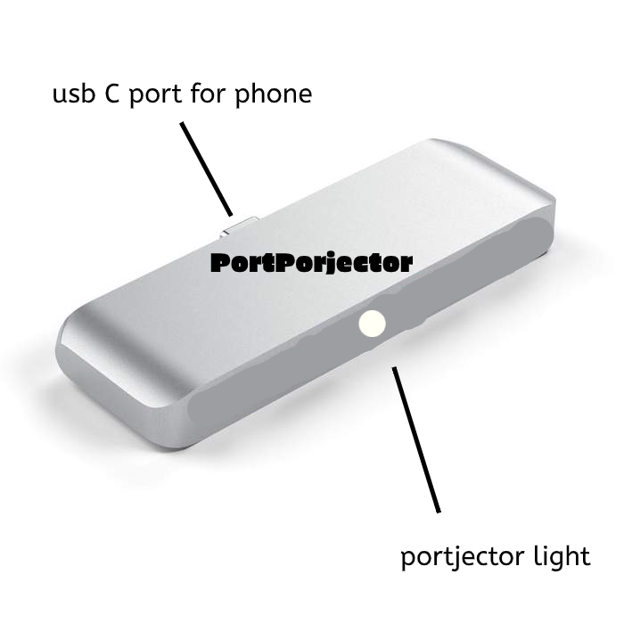

| port | color | price |
|---|---|---|
| USB-C | gray | 110$ |
| USB-C | black | 110$ |
| USB-C | white | 100$ | micro-USB | gray | 90$ |
| micro-USB | black | 90$ |
| micro-USB | white | 80$ |
| lightning cable | gray | 110$ |
| lightning cable | black | 110$ |
| lightning cable | white | 100$ |
Our product PortPorjector is a revolutionatiry device which replace many devices that we carry around all day into one device our smartphone. By adding our product to the charging port of your phone you get a 4k porjector. this can replace your tv, home theter, pc, laptop and game console. by using the technology in your phone we expand your display up to 120inch depending on how close you put it to the wall. With a big screen you can watch movie, conect keybord and mouse and do work and by conecting a game controller you can turn this device into a game console. 